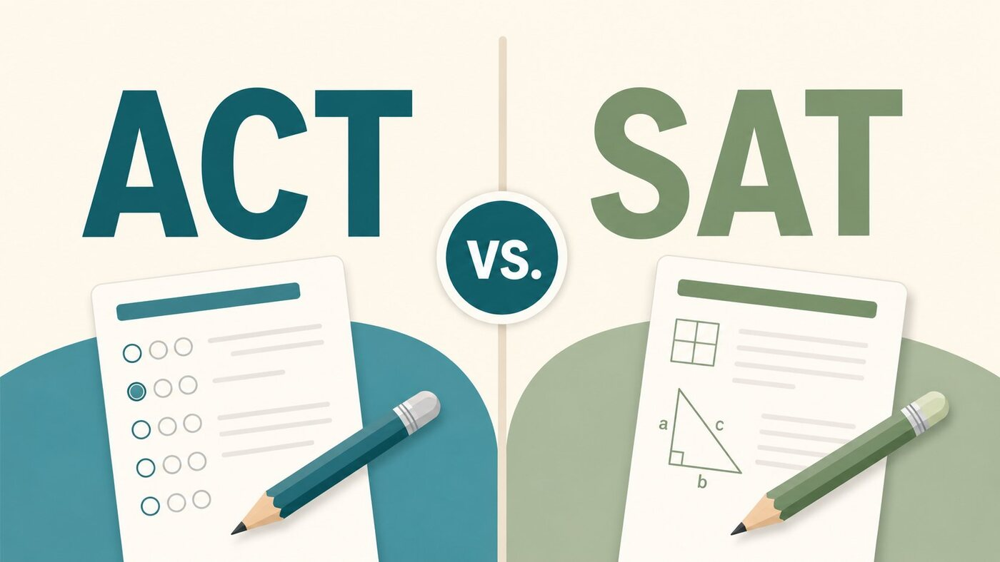

Both major college admissions tests changed recently, so a lot of the advice floating around online is out of date. Here’s where things actually stand in 2026, and a simple way to decide which test is right for you.
The SAT is now fully digital and adaptive
The SAT is taken on a computer through the College Board’s Bluebook app. It has two sections (Reading & Writing and Math) and runs about two hours and fourteen minutes, noticeably shorter than the old paper version. A few things worth knowing:
- It’s section-adaptive: each section is split into two modules, and how you do on the first module determines the difficulty of the second.
- Reading passages are short, with one question each, no more long passages with a block of questions.
- A built-in graphing calculator (Desmos) is available for the entire math section.
- It’s still scored on the familiar 400–1600 scale, and scores come back within days.
The ACT is now the shorter “Enhanced ACT”
The ACT rolled out its biggest update in years starting in 2025. The current version is shorter (roughly two hours for the core test) with fewer questions and a bit more time per question, so it feels less rushed. The key changes:
- Science is now optional. Your Composite score (still on the 1–36 scale) comes from English, Math, and Reading. If you take Science, it’s reported separately.
- The Writing (essay) section remains optional, as it has been for years.
- It’s offered in both digital and paper formats, unlike the now digital-only SAT.
- The questions are shorter and more streamlined, but the underlying skills being tested haven’t really changed.
So which one should you take?
Honestly, colleges accept both equally, so the right test is simply the one you’ll score better on and feel more comfortable taking. A few things to weigh:
- Take a timed practice test of each. This is by far the best predictor. Whichever one feels more natural, and where your score comes out higher relative to the scale, is usually your test.
- Think about the adaptive format. Some students like that the digital SAT is shorter and adjusts to them; others prefer the ACT’s straightforward, every-question-counts structure.
- STEM-leaning students may still want ACT Science. Even though it’s optional now, a strong Science score can showcase exactly the skills a STEM applicant wants to highlight, and some programs still like to see it.
- Check your target schools’ policies. Requirements around Science and essays are still settling, so confirm what the colleges on your list actually want.
My advice: don’t agonize over the choice in the abstract. Sit for one timed section of each, see which one fits your brain, and commit. The score gains come from focused prep on one test, not from endlessly comparing the two.
The bottom line
The digital SAT is shorter, adaptive, and calculator-friendly throughout the math section. The Enhanced ACT is shorter too, with an optional Science section and a digital-or-paper choice. Pick based on a real diagnostic of each, then prepare deliberately. If you want help choosing and building a plan, that’s exactly what my ACT & SAT prep is for.